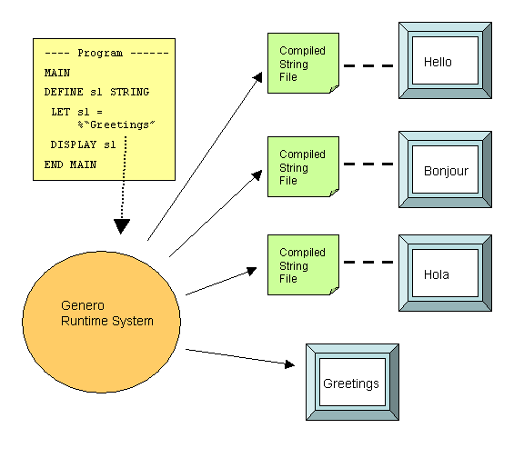
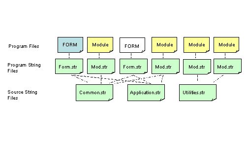
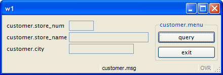
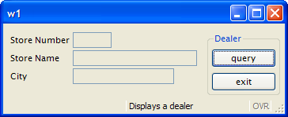

Summary:
Localization Support is a feature of the language that allows you to write application supporting multi-byte character sets as well as date, numeric and currency formatting in accordance with a locale.
Localization Support is based on the system libraries handling the locale, a set of language and cultural rules.
See Localization for more details.
Localized Strings allow you to internationalize your application using different languages, and to customize it for specific industry markets in your user population. Any string that is used in your Genero BDL program, such as messages to be displayed or the text on a form, can be defined as a Localized String. At runtime, the Localized String is replaced with text stored in a String File.
String Files must be compiled, and then deployed at the user site.

The following steps describe how to use localized strings in your sources:

$"common.accept" = "OK"
$"common.cancel"= "Cancel"
$"common.quit" = "Quit"
A Localized String begins with a percent sign (%), followed by the name of the string identifying the replacement text to be loaded from the Compiled String File. Since the name is a string, you can use any characters in the name, including blanks.
LET s1 = %"Greetings"
The string "Greetings" is both the name of the string and the default text which would be used if no string resource files are provided at runtime.
Localized Strings can be used any place where a STRING literal can be used, including form specification files.
The SFMT() and LSTR() operators can be used to manipulate the contents of Localized Strings. For example, the program line:
DISPLAY SFMT( %"cust.valid", custnum )
reads from the associated Compiled String File:
"cust.valid"="customer %1 is valid"
resulting in the following display when the value of custnum is 200:
"customer 200 is valid"
You can generate a Source String File by extracting all of the Localized Strings from your program module or form specification file, using the -m option of fglcomp or fglform:
fglcomp -m mystring.4gl > mystring.str
The generated file would have the format:
"Greetings" = "Greetings"
You could then change the replacement text in the file:
"Greetings" = "Hello"
The source string file must have the extension .str.
Source String Files must be compiled to binary files in order to be used at runtime:
fglmkstr mystring.str
The resulting Compiled String File has the extension .42s (mystring.42s).
The Compiled String Files, produced by the fglmkstr tool, must be deployed on the production sites. The file extension is .42s.
By default, the runtime system searches for a .42s file with the same name prefix as the current .42r program.
You can specify a list of string files with entries in the FGLPROFILE configuration file:
fglrun.localization.file.count = 2
fglrun.localization.file.1.name = "firstfile"
fglrun.localization.file.2.name = "secondfile"
The current directory and the path defined in the DBPATH/FGLRESOURCEPATHenvironment variable, are searched for the .42s Compiled String File.
Tip:
This form specification file uses the LABEL form item type to display the text associated with the form fields containing data from the customer database table. LABEL item types contain read-only values.
| form.per |
|
Notes:
06 and 18: The form contains a LABEL, lab1; the TEXT of the LABEL is a Localized String,
customer.store_num.20: The COMMENT of the EDIT
f01 is a Localized String, customer.dealermsg.08 and 21: The TEXT of the LABEL lab2 is a Localized
String, customer.store_name.10 and 23: The TEXT of the LABEL lab3 is a Localized
String, customer.city.These strings will be replaced at runtime.
After translation, the string source file would look like this:
01"customer.store_num"="Store No"02"customer.dealernummsg"="This is the dealer number"03"customer.store_name"="Store Name"04"customer.city"="City"
This program module opens the form containing Localized Strings:
| Module prog.4gl |
|
Notes:
07, 08, 34 and
39 contain Localized Strings for the messages
that the program displays.These strings will be replaced at runtime.
After translation, the string source file would look like this:
01"customer.msg"="Displays a Dealer"02"customer.menu"="Dealer"03"customer.valid"="Customer %1 is valid"04"customer.notfound"="Customer was not found"
The program is compiled into cust.42r.
fgl2p -o cust.42r prog.4gl
Both string files must be compiled:
fglmkstr form.str fglmkstr prog.str
The resulting Compiled String Files are form.42s and prog.42s.
The list of Compiled String Files is specified in the FGLPROFILE configuration file. The
runtime system searches for a file with the "42s" extension in the current directory and in the path list defined
in the DBPATH/FGLRESOURCEPATH environment variable. Specify the total number of files, and
list each file with an index number.
01fglrun.localization.file.count = 202fglrun.localization.file.1.name = "form"03fglrun.localization.file.2.name = "prog"
Set the FGLPROFILE environment variable:
export FGLPROFILE=./fglprofile
Run the program:
fglrun cust
Display of the form using the default values for the strings:

Display of the form when the Compiled String File is deployed:
